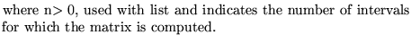
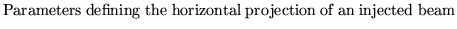

Input formatPParameter definitions
RMATrix.......................(up to 80 characters)
dx dx' dy dy' dl d
norder mprint [nlist]
nmopt
dx dx' dy dy' dl d

norder 
mprint
-2
-1 
0 
n 
nlist
nmopt


Examples
The first example comes from demo9.
The second, which illustrates its use in conjunction with a movement analysis operation, comes from demo12.
rmatrix 0 0 0 0 0 0 1.0e-06 1.0e-06 1.0e-06 1.0e-06 1.0e-06 1.0e-06 1 -1 0, * The following is to illustrate the use of rmat and geometric * aberrations in conjunction with movement analysis movement analysis 1 1 1 -3 1 0 0.00001 0 0 0 0 0 0.002 0, geometric aberration 0 0 0 0 0 0 0 0 0 1 100 1 1 -2 10 10, print interval m1 m2 99, end, rmat 0 0 0 0 0 0 1.0e-6 1.0e-6 1.0e-6 1.0e-6 1.0e-6 1.0e-6 1 1,